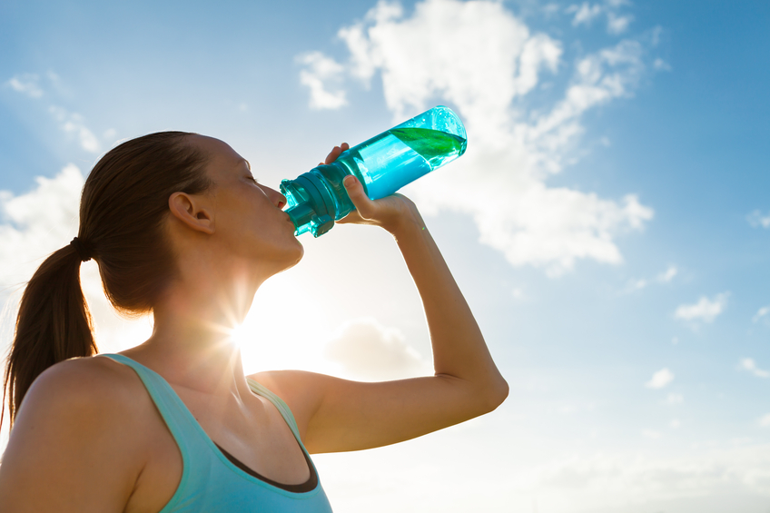
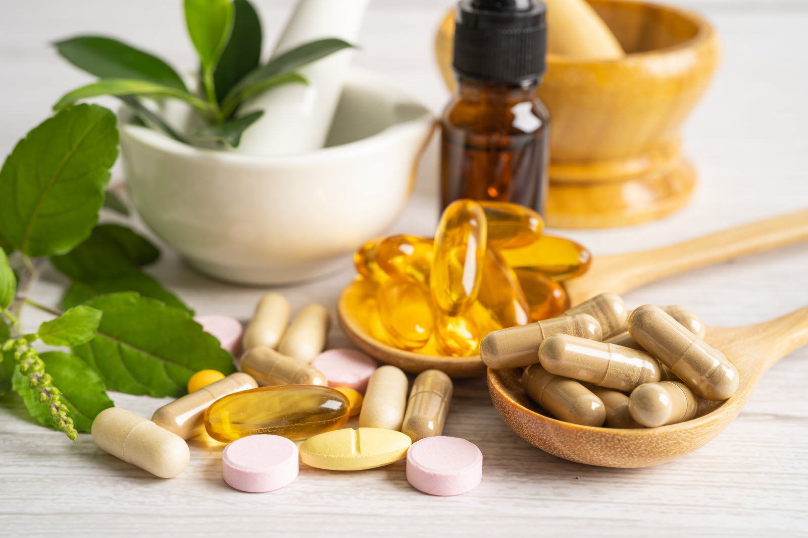

Conseils sur l’alimentation et la nutrition
Repas équilibré

Un repas équilibré doit inclure des protéines, des glucides, des lipides sains, et des légumes. Assurez-vous de manger des portions appropriées pour votre niveau d'activité.
Hydratation
L'hydratation est essentielle pour des performances optimales. Buvez au moins 2 litres d'eau par jour et plus si vous faites de l'exercice intense.
Compléments alimentaires
Les compléments alimentaires peuvent aider à combler les carences nutritionnelles. Consultez un nutritionniste avant de commencer tout supplément.